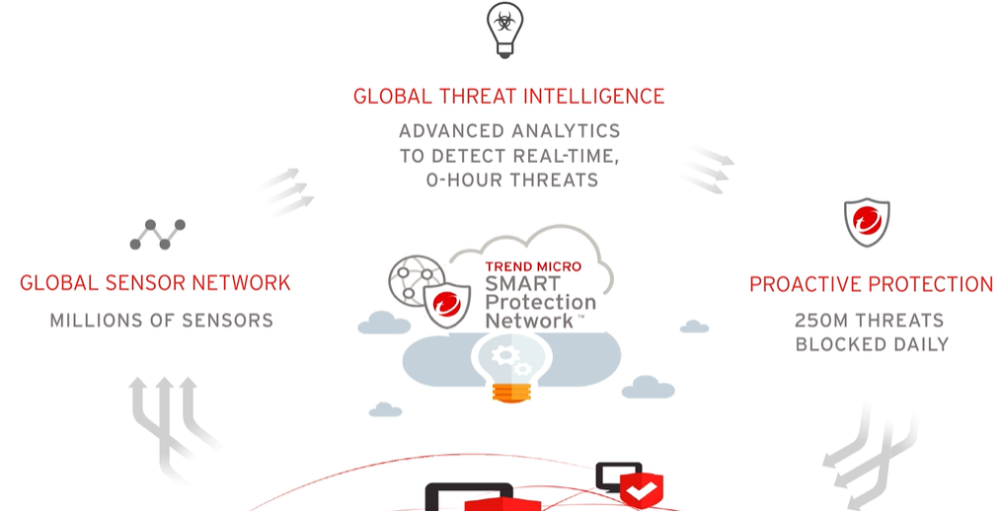

Ransoware
Target detect
Frod??
Requiry:
- Smarter Security
- To prevent loss of data
- money
- reputation
Security agent from the cloud.
Smart protection Network collect threat information from a million of sensors

Machine learning examine Who, What, Where, When and Why
- Document exploit detection: Such as Note, PDF blocks and so on

- Mac and android em paralelo sandbox
- Use Sandbox anti evasion techniques:
Mouse movements and Accelerated Time environments
-Real-time analysis(web sites static)
How detect Fake Emails and business email compromise attacks?
Security Expert
- IA and analysis
An Expert will see:
Mail header -> behavior

Mail content -> intention

Expert System:
- The rules will decide what is suspicious


Machine Learning:
- Real/ Fake or Suspicious
- Analyse Websites
-Identify Spam emails
- Identify malicious files
Trend Micro
Solution to scan internal email because someone can be your password or login:
- Office 365
- Microsoft Exchange
-IBM
File, website and email